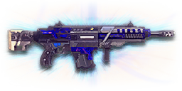

← Back to the Gauss Prime comparison
Sage Guide · New Conglomerate · Combat Medic / Engineer
The directive reward for mastering the NC1 Gauss Rifle: the same hard-hitting 167-damage rifle, with gentler recoil, a built-in grip, and a healing launcher under the barrel. You earned it by finishing the Master Assault Rifle directive — this page teaches you to fight with it.
The one-line verdict: a hard-hitting, precise rifle that plays like a marksman's assault rifle. It rewards good aim and short bursts, and punishes spray-and-pray. Fight between 10 and 40 metres and it will carry you — and your squad will love the healing launcher.

The Gauss Prime · New Conglomerate · 30-round magazine · Master Assault Rifle directive reward
Every enemy infantry has 1,000 health (500 shield + 500 health). Your bullet does 167 damage up close, fading to 125 at long range. Headshots count double, leg shots count less (×0.9). That gives you three numbers worth memorising:
| Range | Damage | Head | Chest | Legs | Chest vs shielded Heavy |
|---|---|---|---|---|---|
| Close · 0–10 m | 167 | 3 | 6 | 7 | 9 |
| Mid · 10–56 m | 167→143 | 4 | 7 | 8 | 11 |
| Far · 56 m+ | 143→125 | 4 | 8 | 9 | 12 |
Perfect-accuracy times to kill: 3 headshots ≈ 0.20 s, 6 chest shots ≈ 0.50 s up close. In real fights you'll land maybe half your rounds — still, this is why the head matters so much on this gun.
Full power to 10 m, then a steady slide to 143 at 55 m and 125 at 90 m. The gold line shows Soft Point Ammunition, which stretches full power to 15 m.
One gun, four fighting styles. The right technique changes with distance — use the range finder below to see what your bullets do at any range, then learn the four bands underneath it.
How to fight hereAim down sights at the upper chest and neck. Fire in bursts of 5–8 — your recoil climbs into the head for free damage.
Aim: centre of the chest, from the hip. Keep moving.
Scoping in costs you time and halves your move speed — at arm's length that gets you killed. The Gauss Prime has decent hipfire for a rifle (2.0° standing still, 0.28 m across at 8 m). Strafe side to side (A/D) while firing so you're hard to track, and let your movement do the defending.
Aim: neck / upper chest. Bursts of 5–8 rounds.
This is where the gun earns its keep: full 167 damage, fast handling, 600 RPM. Start your crosshair at the neck — the natural upward climb walks your shots into the head, and 3 head hits end the fight in a fifth of a second. Strafe while scoped; you're slower, but a moving target still beats a still one.
Aim: chest. Bursts of 5–8 rounds, pause between them.
Damage is sliding toward 143 and your cone of fire blooms if you hold the trigger. Fire a burst, release for a split second to let accuracy reset, fire again. The recoil drifts up and to the right (17–19°), so pull your mouse gently down and to the left. Crouch or stand still when you can — both tighten your shots.
Aim: chest. Taps of 3–5 rounds at exposed targets only.
At 125 damage you need 8 chest shots — a long, loud advertisement of your position — and your 675 m/s bullets are the fastest of the starter rifles, so you at least don't have to lead much. Take these shots at stationary or fleeing targets, medics reviving, and engineers on turrets. Otherwise, your better play is to close the distance behind cover. Knowing when not to shoot is a skill too.
Your accuracy is decided by two things before skill even enters it: what your body is doing (your stance sets the starting cone of fire) and what your finger is doing (holding the trigger grows that cone with every shot). The Gauss Prime has no fire-mode switch — full-auto only — so "firing modes" are something you do with your finger, not a setting on the gun.
| Stance | Starting cone | What it means for you |
|---|---|---|
| Sprinting | 7.0° | Maxed out — the widest the cone can be. Never start firing from a sprint. |
| Hipfire, moving | 2.5° | Walking or strafing from the hip. Fine inside ~10 m, leaks rounds past the target beyond it. |
| Hipfire, standing | 2.0° | Your point-blank default. The 0.28 m ring at 8 m in section 04 is this stance drawn out. |
| Hipfire, crouched | 1.5° | The tightest hipfire you have (2.0° if you crouch-walk). Crouch when holding a doorway from the hip. |
| Aimed (ADS), feet planted | 0.03° | Standing or crouched makes no difference here — more than sixty times tighter than hipfire. This is why you plant your feet before you fire. |
| Aimed (ADS), strafing | 0.30° | Ten times wider than standing still — and you move at half speed (0.5×). Strafe between bursts to stay hard to hit; plant your feet during each burst. |
| Mode | How your finger does it | Use it at |
|---|---|---|
| The mag dump | Hold the trigger and don't let go | Point blank only, or suppressing a doorway. Bloom maxes out fast — past ~8 rounds you're spraying, not aiming. |
| Bursts — the default | Hold for 5 rounds, release ~0.15 s, hold again. 6–8 rounds is fine while you're learning | Almost everything, 10–50 m. Each release resets the cone, so every burst starts at 0.03°. |
| Tap-fire | Short taps of 3–5, or single clicks, with a real pause between | 50 m and out, at exposed or stationary targets. Slow, but every round goes where the dot is. |
One thing the numbers don't do: the cone never stops growing while you hold the trigger. Aimed, it starts at 0.03° and grows 0.06° with every shot — after 5 rounds it's 0.33°, after 8 it's 0.51°, and it keeps going. There is no "free" stretch where the cone freezes; the only reset is letting go of the trigger. That is exactly what the practice window below teaches your finger.
A target 30 m away, aiming down sights. Press and hold FIRE (mouse, touch, or hold Space with the button focused) and watch the holes walk wider the longer you hold — that's firing from an ever-growing cone. Release, let the cone reset, fire again. Aim for bursts of 5; 6–8 is tolerable while you're new. This practice window is shared by the whole Sage series: it's driven by a weapon profile plugged into the window — here the Gauss Prime's (600 RPM, 0.03° starting cone, 0.06° bloom per shot, target at 30 m) — and the spread is drawn at true scale from those numbers.
Cone of fire — fills as you hold, empties when you release.
Your bursts will be graded here — green at 5 rounds, tolerable up to 8.
Some things are easier to show than to say. Here's what your bullets actually do: how wide hipfire spreads at 8 metres, what a good burst rhythm looks like, and what the 2x sight really changes. The hands-on version — holding the trigger yourself — is the practice window in section 03.
A full-size target 8 m away — an arm's-length room fight. The rings show where hipfire rounds land around your aim point (the chest). Sizes are drawn to scale from the gun's real cone-of-fire numbers.
Read it this way: standing still, the 0.28 m ring roughly covers the chest — most rounds hit a target this size, which is why hipfire works point-blank. But move and it grows to 0.35 m — still inside the torso at 8 m, but the rings only grow with distance while the man doesn't. Past ~10 m that's rounds missing entirely: the exact moment to switch to aiming down sights, where the spread shrinks to a dot. (Ring sizes use the real geometry: spread diameter = 2 × distance × tan(cone ÷ 2).)
Every shot widens your cone of fire ("bloom"). Releasing the trigger for a heartbeat resets it. Same 18 rounds, two very different outcomes:
The target pattern is bursts of about 5 rounds — that's the ideal. Bursts of 6–8 are fine while you're new (call it newbie tolerance). Past that, the bloom (0.06° per shot aimed, 0.12° from the hip) keeps growing with every shot — after 5 aimed rounds your cone is already 0.33° wide, after 8 it's 0.51° — so the extra bullets mostly decorate the wall behind your enemy instead of hitting him. Short bursts also leave you rounds for the second enemy — remember, the magazine is only 30.
No zoom. The target at 35 m is small but the view is wide open — you see the crate, the tower, and the next enemy coming. Fast to aim, nothing blocks your edges. Best inside ~40 m.
Same target, same 35 m — but he looks twice as tall, so placing shots on his chest and head gets much easier. The price: your view narrows to the round window, the crate and tower are gone, and close targets feel fast and huge. Best at 25–50 m.
That's the whole 30-cert decision from section 05 in one picture: 1x for awareness, 2x for precision. Most veterans carry both and swap per base — indoors 1x, open ground 2x.
The Gauss Prime is a directive weapon — you earned it by completing the Master Assault Rifle directive, so the gun itself cost you 0 certs. And yes, it takes attachments: since the 2022 Arsenal Update, directive weapons have full attachment slots. One of the best is already built in — the gun ships with a Forward Grip's effect baked into its base stats (its sideways recoil is 0.131° against the NC1's 0.175°), and its vertical recoil is already 15% lower than the NC1's. Everything below is an optional sidegrade, not an upgrade. Buy in the order shown and stop whenever the gun feels right. Two things that don't exist for this gun at all: there is no Suppressor and no Flash Suppressor — if a loadout video tells you to run silent on the Gauss Prime, it's for a different weapon — and no Extended Magazine, only the Heavy Magazine below.
What the gun ships with. Usable, but the chunky NC irons block more of the target than a red dot does.
Good: your first fights while you save 30 certs for the reflex sight below.
Bad: as a permanent choice — a clean dot is worth 30 certs.
A clean red-dot sight with no zoom. Your best all-round option, and the first thing worth buying.
Good: everywhere indoors and out to ~40 m — which is most PlanetSide fights.
Bad: picking out targets past 50 m; that's what the 2x is for.
Doubles your view magnification. Costs almost nothing — the price of one kill or two.
Good: open-field bases, tower fights, and your 25–50 m burst game. Swap between 1x and 2x per fight.
Bad: tight indoor rooms — the zoom makes close targets feel fast and huge.
Night-vision sight: enemies glow white against a dark view, and it sees through smoke.
Good: night fights, smoky doorways, spotting infiltrators by their outline.
Bad: daytime and long range — its view is short-ranged and washes out in bright light.
LX Tacti-Eye / LACO (3.4x) and TrueShot / LX Mark IV (4x) — sniper-style magnification on an automatic rifle.
Good: almost nothing a beginner does — recoil magnifies too, and tunnels your vision.
Bad: any fight inside 30 m, which is where you'll spend your first hundred hours.
The Gauss Prime's recoil is already gentle — 15% less vertical kick than the NC1 before you spend anything. Plenty of veterans run this slot empty forever.
Good: your first weeks. Spend certs on your class ability and suit first.
Bad: nothing — there's no downside to an empty slot.
Cuts vertical recoil by 30% (0.255 → 0.18). Costs you: hipfire spread grows 15%, and enemies see you on the minimap from 35 m farther away when you fire.
Good: if you mostly aim down sights at mid-range and the upward climb bothers you.
Bad: hipfire builds and sneaky play — you get louder on the map and sloppier from the hip.
Your shots bloom 20% slower while aiming (0.06° → 0.048° per shot) — longer accurate bursts. But you move 20% slower while scoped (0.5× → 0.4×).
Good: holding a lane or doorway at 25–50 m, firing from a steady position.
Bad: aggressive room-clearing — the slower scoped strafe makes you an easier target.
Hipfire bloom grows 40% slower (0.12° → 0.07° per shot) — much steadier hip spraying. But vertical recoil rises 20% when you do aim (0.255 → 0.31).
Good: a dedicated close-quarters build paired with the Laser Sight.
Bad: general play — it taxes the aimed shooting you'll do most.
Already fitted: side-to-side recoil cut by 25% — that's why your horizontal walk is only 0.131° against the NC1's 0.175°. The wiki is explicit that this benefit is not lost when you fit another rail attachment, so the rail slot is genuinely free.
Good: it's on the gun whether you like it or not, and you will like it.
Bad: paying 100 certs for the Forward Grip attachment in the shop — it would buy you the same effect you already have. Skip it.
An underbarrel launcher that fires a healing projectile: it heals allies over time where it lands and cleanses most status effects on impact. Toggle it with the Gear Slot 1 hotkey. Cost: the gun takes 0.25 s longer to equip while it's fitted (0.8 s → 1.05 s).
Good: shooting it at a wounded squadmate holding a doorway, or at a group of allies pushing through a choke — healing from range while you stay behind cover. This is the medic fantasy in one attachment.
Bad: a straight duel — it does no damage to enemies, and the slower equip time hurts if a fight surprises you with your tool out.
Hipfire accuracy improves by a third (33% tighter cone: 0.28 m down to 0.19 m at 8 m standing). On most guns this replaces the Forward Grip — on this one it doesn't, because the grip is built in. You keep the grip and get the laser.
Good: indoor point-holds and stairwell fights where you hipfire inside 10 m.
Bad: open bases — you give up nothing on recoil, but the bonus only matters up close.
The first shot of each burst kicks 60% less (first-shot vertical 0.55° → 0.22°) — but side-to-side recoil rises 10% on everything (0.131° → 0.144°).
Good: disciplined burst and tap-fire at 40 m+, where every burst starts fresh. This pays better on the Gauss Prime than on gentler guns: its first-shot kick is 2.15×, the biggest jump of any shot in the burst.
Bad: beginners' longer bursts — if you're holding the trigger past 8 rounds, the first-shot bonus barely matters.
A torch whose beam reveals cloaked infiltrators. Toggle it with the attachment key (X by default).
Good: hunting a stalker infiltrator camping your capture point — sweep corners with it.
Bad: as your everyday rail — it gives zero accuracy help, and the beam advertises your position.
Full 167 damage now reaches to 15 m instead of 10 m (the gold line on the chart above). Cost: bullets fly 10% slower (675 → 608 m/s).
Good: nearly always — most duels happen at 10–20 m, exactly where this extends your 6-shot kill.
Bad: long-range duels against runners, where the slower bullet needs more lead. A small price.
Bullets fly 10% faster (675 → 743 m/s) and minimum damage stretches from 90 m to 110 m — but full damage now ends at 8 m instead of 10 m.
Good: open-field fights at 40 m+, where the faster bullet and longer damage floor earn their keep.
Bad: close-quarters play — you give up 2 m of full damage for speed you don't need indoors.
Five extra rounds in the magazine (30 → 35), but hipfire spread grows 20% (2.0° → 2.4° standing still).
Good: if you keep running dry mid-fight in big squad pushes — five rounds is nearly one more kill.
Bad: hipfire-heavy play, where the wider cone costs you the close fights the extra rounds were meant to win.
0 certs · Day one
What the directive hands you. Genuinely good — the built-in grip is already working, and the Cure Launcher is free. Learn the gun on this before spending anything.
130 certs · Recommended
The best value in this whole guide. Covers every fight from a doorway to a tower courtyard — and heals the squad between them.
230 certs · Indoor brawler
Built to hipfire down stairwells and hold a capture point room. Swap back to the All-Rounder outdoors.
230 certs · Open ground
For tower courtyards and open lanes: slower bloom, faster bullets, and a sight that makes 40 m feel like 20 m. Weak indoors — so don't take it indoors.
The whole lesson in one line: never shoot while you're still running, and never press the trigger before the sight picture settles. A stopped, aimed Gauss Prime puts its first bullet inside a 0.03° cone — a running one sprays from 7°. That one pause is the difference between a kill and a death screen.
Headshots deal double damage: 3 kills up close versus 6 to the chest. Don't aim at the head directly — aim at the neck and let the gun's natural upward climb carry shots two and three into the skull. It's the single biggest damage upgrade you own, and it's free.
Every shot widens your cone of fire. Holding the trigger past ~8 rounds at range means later bullets fly around your target, not into it. Five rounds is the ideal burst; release the trigger for a heartbeat between bursts — your accuracy resets and your hits per magazine roughly double.
Reloading with even 1 bullet left takes 1.95 s; an empty gun takes 2.6 s — over half a second you don't need to give away mid-fight. Count roughly: after a kill or ~20 rounds, duck behind cover and reload early. Treat the last 10 rounds as your emergency reserve, not your working magazine.
Walk with your crosshair at head height, pointed where an enemy's head will appear — a doorway edge, a corner, stairs. Most beginners lose fights in the half-second spent dragging the crosshair onto target. While firing, tap A/D to strafe: a moving target is dramatically harder to headshot back.
Your damage, accuracy and bullet speed all shine at close-mid range. Sprint between cover, use buildings and rocks as stepping stones, and arrive at your range before opening fire. The player who chooses the range usually wins the duel — make it you.
Every gun has a price. Here's where the Gauss Prime pays — and the habit that covers each hole.
Thirty rounds vanish fast when suppressing a doorway, and the only way to buy more is the Heavy Magazine: +5 rounds, but your hipfire cone grows 20% (2.0° to 2.4° standing). There is no Extended Magazine on this gun at all.
Play around it: burst discipline (habit 3) and early reloads (habit 4). Your 1.95 s reload is quick — reloading often is the design, not a failure.
Your first-shot recoil multiplier is 2.15× — the first round of every burst leaps 0.55° upward, more than double any shot after it. Hold the trigger and the climb never settles; start a burst carelessly and the opening round is the one that misses.
Play around it: make the first shot count — be fully aimed before you press the trigger, and consider the Angled Forward Grip, which cuts that first-shot kick by 60%.
Past 56 m you're at 125 damage: 8 chest shots, 12 against a shielded Heavy, with bloom fighting you the whole way. Snipers and battle rifles own that ground.
Play around it: tap-fire at exposed targets only, and spend the rest of the time closing distance. Your sweet spot is 10–40 m — get there first.
Its recoil angle is 17–19° rightward. In a long burst your aim walks off the target's right shoulder — you'll see this clearly in the VR drill below.
Play around it: pull your mouse down-left while firing, in the opposite direction of the climb. The built-in grip already keeps the sideways walk small (0.131°), so the climb is mostly straight up.
You move at half speed while aiming down sights (0.5x), and the gun takes 0.8 s to swap to — 1.05 s with the Cure Launcher fitted. Slow if a fight surprises you with your tool or sidearm out.
Play around it: hipfire inside 10 m instead of scoping (that's the Point Hold build's whole idea), and swap weapons behind cover, never in the open.
Open the world map, travel to VR Training, and run these on the target dummies. Five minutes before a play session beats an hour of dying confused.
Aim at a wall 20 m away and empty a full magazine without touching the mouse. Watch the bullet pattern climb up-right at 17–19° — that's your gun's fingerprint. Repeat, this time pulling down-left, until the group stays fist-sized.
Walk the dummy range keeping your crosshair glued to neck height the whole time, snapping to each new target without dipping to the floor or sky. Slow and clean first; speed comes on its own.
At 30–40 m, kill dummies with bursts of 5, releasing the trigger fully between bursts. If a burst goes wide, shorten it. Goal: whole kills without a single wild round.
Pick a dummy, stand 5 m away, and circle it with A/D while hipfiring it down without stopping. This is your point-blank survival skill — the one that fires while your movement does the defending.
Fire exactly 20 rounds, step behind a pillar, reload, repeat. Train your hands to reload early and only in cover until it's automatic — in real fights you'll do it without thinking, which is the point. The last 10 rounds are your reserve.